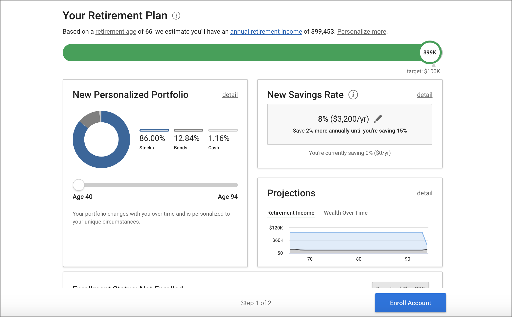

Karen Ma
Senior Product Designer @ SingleStore — growth, security, developer experience.
Automations Rule Builder (2022)
Defining product vision and patching UX debt

- Automations, a rule builder that allowed users to automate parts of their work had long existed in the application. However, it proved too confusing for users and as a result, most automations were built by customer support staff on behalf of our customers. As the squad’s first product designer, I worked to define our long-term product strategy and immediate next steps.
- After conducting some discovery research and facilitating a series of product workshops, we concluded that we needed to make Automations easier to use and more trustworthy. A interface without such a sharp learning curve would allow us to shift the user base from our internal customer support staff back to our users. Without this move, scaling the product would require hiring more staffers. In addition to the rule builder itself, we needed to provide new features to increase trust from our users.
- This project required an overhaul to taxonomy, for more user-friendly language, an overhaul to the rule building interface, as well as the addition of several audit capabilities, such as a history log, customer facing alerts, and automations preview, to provide a users a way to see what was going on.
- Notably, our customers can create Automations via the UI, or via API and any changes we made needed to be compatible with developers who used our API. Power users also developed workarounds and hacks that relied on functionality that was technically broken. We needed to prevent anything from breaking while trying to pave the way for a future that didn’t need hacky workarounds.
Cobalt - LogicGate Design System (2021)
Fundamentals: guidelines for buttons and voice and tone
- At the time of my contributions, the design system was in its infancy. Among other contributions to the design system, my most impactful work related to auditing button usage across the platform and creating guidelines on button usage, and creating voice and tone guidelines for copywriting.
- Buttons are a foundational component for design systems. They are widely used and providing guidelines for button usage gives a platform structure and consistency. After auditing our button usage across the application, I wrote guidelines on button placement, button copy, and button hierarchy.
- Without a dedicated copywriter, copy was written by product managers, product designers, and front-end engineers. Inconsistencies are especially notable when it comes to error messages, empty states and guidance messaging. I facilitated a workshop to define our voice and wrote documentation for a more cohesive copywriting methodology.
Integrations@LogicGate (2021)
Looking at the user's holistic workflow beyond our application
- Especially when it comes to SaaS, the more embedded your product is into the users’ workflow, the less likely your customers will go through the effort of changing vendors. For this project, I worked with a product manager to explore ways we could increase stickiness through added convenience. We ended up with a Microsoft365 integration and a RiskCloud Documents offering.
- Through generative research, we learned that our users had a strong reliance on Excel and Word and were frequently downloading and re-uploading versioned files through their day. By providing a Microsoft integration, users could now edit their files in-app, decreasing friction in their workflow.
- Sometimes, users were repeating the information within the platform into a separate local file, for reporting purposes, doubling their workload. With our Documents offering, we provided users with an easy way to export into their format of choice. Now, users could do more of their work within our application.
Self-service Retirement Wizard (2020)
Shifting from B2B to B2B2C: An alternative experience for the novice user base
- Following a pivot in product strategy from financial advisors to the every day user, I worked to reframe our existing product for a more novice user base, including a simplified onboarding flow and educational dashboard experience.
- For this project, I worked on the onboarding and dashboard designs with a team of two other designers, as well as leading the technical integrations with 401k plan providers. This was also the first introduction of user experience design into the product development process, requiring design evangelization to the org.
- I led generative research to shape our design strategy for the new target audience and set up usability metrics to inform iterations as we started shipping our features. Novice users were overwhelmed by personalization options in the original interface and needed more education on recommended actions. Not only did we see an increase in users, we also saw better outcomes for our users, for a product-led growth strategy.